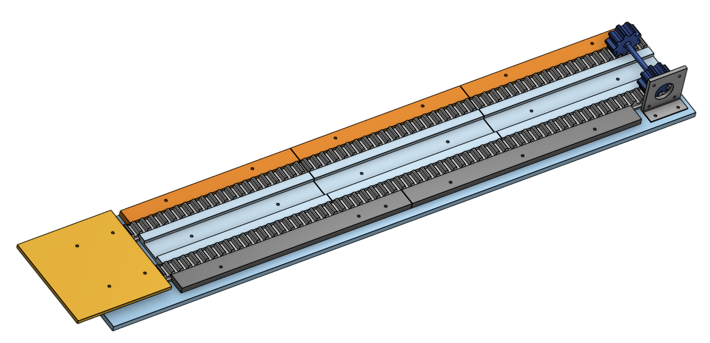
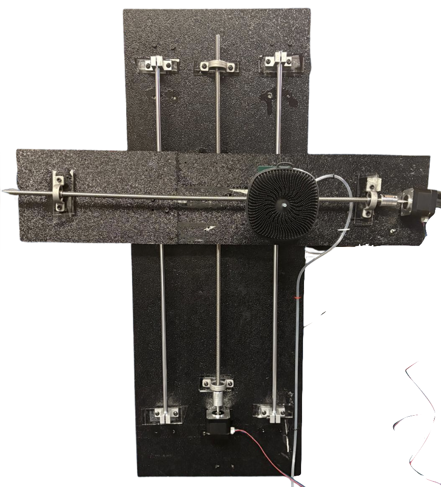
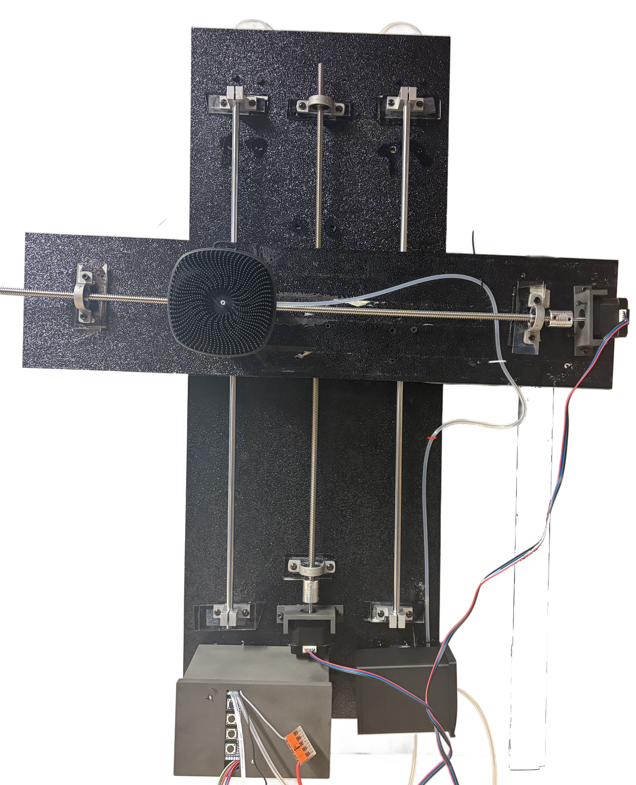

stem_two
STEM II takes place in the second half of STEM with Science and Technical Writing. Students work in groups of 4 to complete an Assistive Technology Project that addresses a key issue faced by people in their daily lives. We work through the engineering design process to make multiple prototypes and come up with a tested and working solution.
BathMate: Designing a Motorized Assistive Bathing Device for Individuals with ME/CFS
Problem Statement
Myalgic Encephalomyelitis/Chronic Fatigue Syndrome (ME/CFS) is a severely debilitating condition affecting millions of individuals across the United States, stripping them of their ability to perform even the most basic daily tasks. Approximately 3.3 million U. S. adults are currently living with ME/CFS (Vahratian et al., 2023), not accounting for the countless individuals that go undiagnosed. ME/CFS is more than persistent tiredness; it is a complex multisystem disease characterized by severe fatigue, cognitive dysfunction, and post-exertional malaise that does not improve with rest (Ali & Kheirabadi, 2025). The functional consequences are profound, with approximately 1 in 4 people with ME/CFS severely disabled to the point that they cannot leave their home or even get out of bed, leaving them unable to perform fundamental hygienic behaviors such as bathing or shaving (Mount Sinai, n.d.). In particular, washing their back can be tiring due to the amount of arm reaching and extension necessary. For this population, the limitations are not a matter of motivation but a genuine physical impossibility, making the need for accessible solutions urgent and undeniable.
Design Approach
Our main goal through this project was to help ME/CFS patients wash their backs independently without the need for caregivers or assistance. Throughout the process of making our current prototype, we had 4 different designs/iterations. To start, we tried creating a rack-and-pinion system that produced fast horizontal scrubbing movement (Design 1). Then, we decided to transition to a double lead screw design that used a lead screw for both horizontal and vertical motion (Design 2). In our 3rd iteration, we decided to make the washing process more autonomous for ME/CFS patients by adding a soap system that can bring soap to the brush head (Design 3). Lastly, we decided to make different modes to accomodate users that might want different brush speeds (Design 4). Our main goal when producing each prototype was to test the efficiency of each new mechanism and make our final design the most useful for our clients.
Designs
Design 1: Our first design utilized a lead screw for vertical motion and a rack-and-pinion for horizontal motion. All components except the backing of the rack-and-pinion were designed in Onshape and 3D printed. This design offered some advantages, including quick motion. However, the rack would extend off the main board, and the overall design was susceptible to wear.

Design 2: The second design involved a lead screw mechanism in the vertical and horizontal directions. A brush holder and stabilizer were designed and attached to keep the brush's motion stable. This design had increased stability and occupied less space in comparison to the previous design.

Designs 3 & 4: Design 3 improved upon Design 2 through the inclusion of a soap container and a peristaltic pump that brings soap to the brush head. ME/CFS patients would have more independence with this design, as the device would provide all the components necessary for washing their back. Design 4 went a step further by presenting customizability to its users. Buttons were added to the device that could control the speed of the washing cycle, providing a simple and personalized user experience.

Future Steps
Future improvements for the project include using PVC covers and waterproof rubber insulation to better protect wiring and tubing while creating a cleaner and safer design. Aluminum or stainless steel panels could also be added to improve durability and corrosion resistance. These upgrades would increase material costs due to the added protective coverings, metal components, and upgraded electrical parts. Future work will also focus on developing a more advanced user interface with clearer buttons and improved spacing, along with adding a remote-control system for easier user interaction and customization. Currently, the electrical box is relatively large and could potentially make contact with the user’s back during operation. Therefore, we would also like to design a more compact and optimized electrical box to ensure it does not interfere with the user experience.